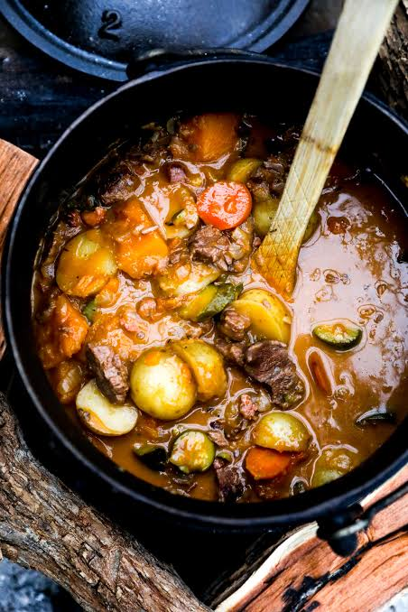

Traditional Beef Potjiekos

Traditional beef potjiekos is a classic South African slow-cooked stew prepared outdoors in a three-legged cast-iron pot over hot
Ingredients
- 1.5 kg beef chuck, brisket, or shin (cut into bite-sized chunks)
- 2 tbsp cooking oil or butter
- 2 large onions, thickly sliced
- 4 garlic cloves, minced
- 250g button mushrooms
- 4 large carrots, sliced into thick rounds
- 4 medium potatoes, peeled and quartered
- 250g green beans, trimmed
- 1 cup beef stock
- 1 cup dry red wine (or extra beef stock)
- 2 tbsp tomato paste
- 2 tbsp Worcestershire sauce
- 2 bay leaves, 1 sprig of fresh rosemary, and a few sprigs of thyme
- Salt and black pepper to taste
Steps
- Brown the meat: Heat oil in the cast iron potjie over hot coals. Brown the beef in small batches so it sears nicely, then remove and set aside.
- Sauté aromatics: Add the chopped onions and garlic to the pot. Cook until soft and fragrant.
- Layer the pot: Return the meat to the pot. Layer the harder vegetables like potatoes and carrots on top, followed by softer vegetables. Do not stir.
- Add liquids: Pour in the mixed beef stock, tomato paste, and seasonings.
- Simmer low and slow: Cover with the lid and reduce the coals so the pot maintains a very gentle simmer for 3 hours. Resist the urge to stir frequently to keep the layers intact.
Home